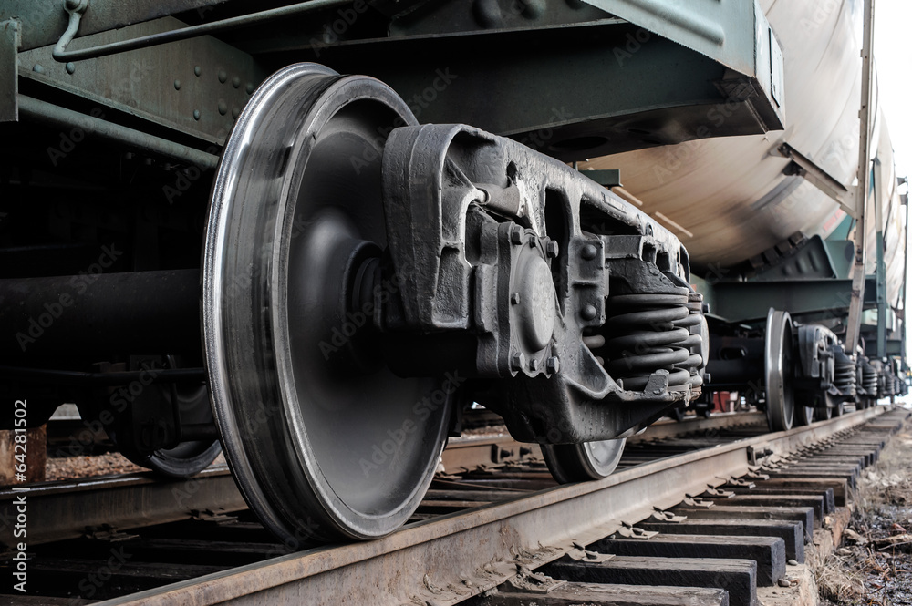
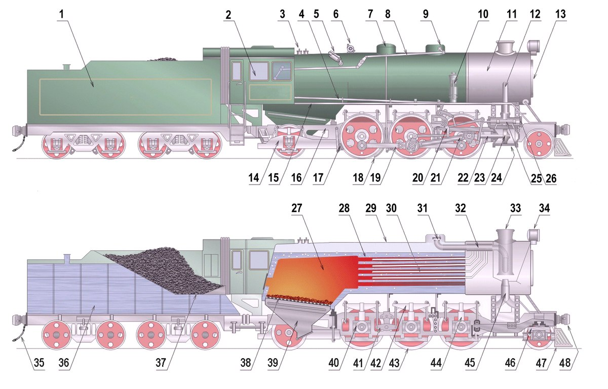

Story about soccer
A steam locomotive is powered through, as the name suggests, steam in which the energy is derived form burning materials and fuel such as wood, coal, and oil to boil water. The supply of fuel and water is stored in a vehicle behind the locomotive, called a tender, which is continuously fed the the firebox that boils the water. The balance between water level and temperature must be maintained to prevent losing momentum or the fire box becoming too hot and damaging the inner mechanisms. Depending on materials burned, temperatures can range from 1000-1200 degrees Celcius, creating steam that expands and pushed the pistons, moving the driving wheel.
A throttle is used to control the steam input in the pistons by opening and closing a valve in the steam dome that collects the steam. The steam will push into the piston, pushing in one direction then exits into an adjacent piston that'll reverse the motion, completing the wheel cycle. The steam is now released through the smoke box on top of the engine along with smoke from the burning material. This draft creates a vacuum that also pulls in fresh air and further feeding the firebox.
A steam locomotive would consist of four leading wheels, six to eight driving wheels, and four trailing wheels. The leading and trailing wheels serves the role of guiding the train through curves and distributing the weight more evenly.
Although most wheels are cylindrical and are exellent for rolling and moving forward, it's limited to a straight line. You may notice that when put a rail it comes into a problem when turning in a curved path. This is due to difference in distance, with one side having a greater perimeter in the outter curve. Having the shape of the wheels take a more conical shape allows the wheels to tilt to favor one side to compensate for such difference. This allows the train to curve more efficiently and rarely reaches it's flanges, which is a projection designed to keep the train within the tracks in cases of misalignment.
Proposed by Frederick Methvan Whyte in early 20th century, the Whyte classification, or locomotive classification, classifies trains by wheel and it's a system still widely used and recogized to this day. The Whyte classification system categorizes by number of wheel types in order of leading wheel, driving wheel, and trailing wheel. For example, if a train has frou leading wheels, eight driving wheels, and four trailing wheels, it would be classified as 2-4-2.